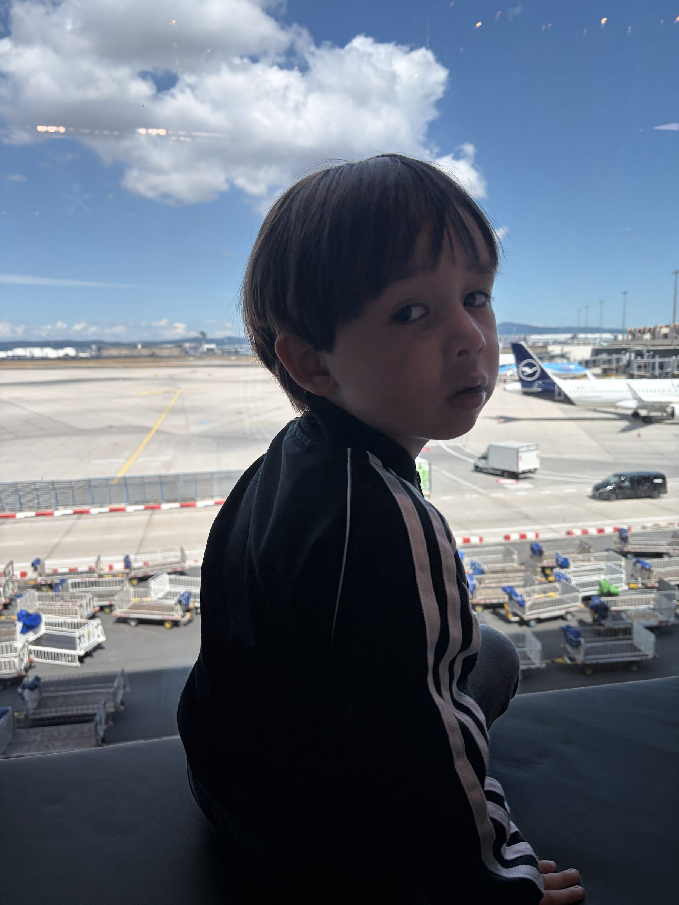
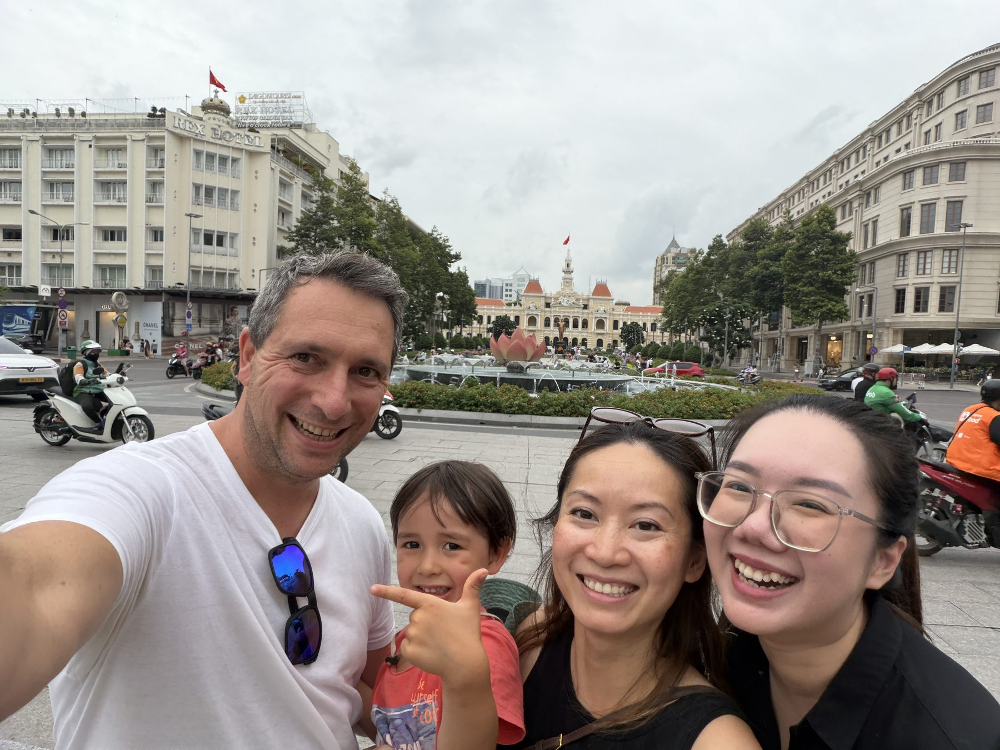
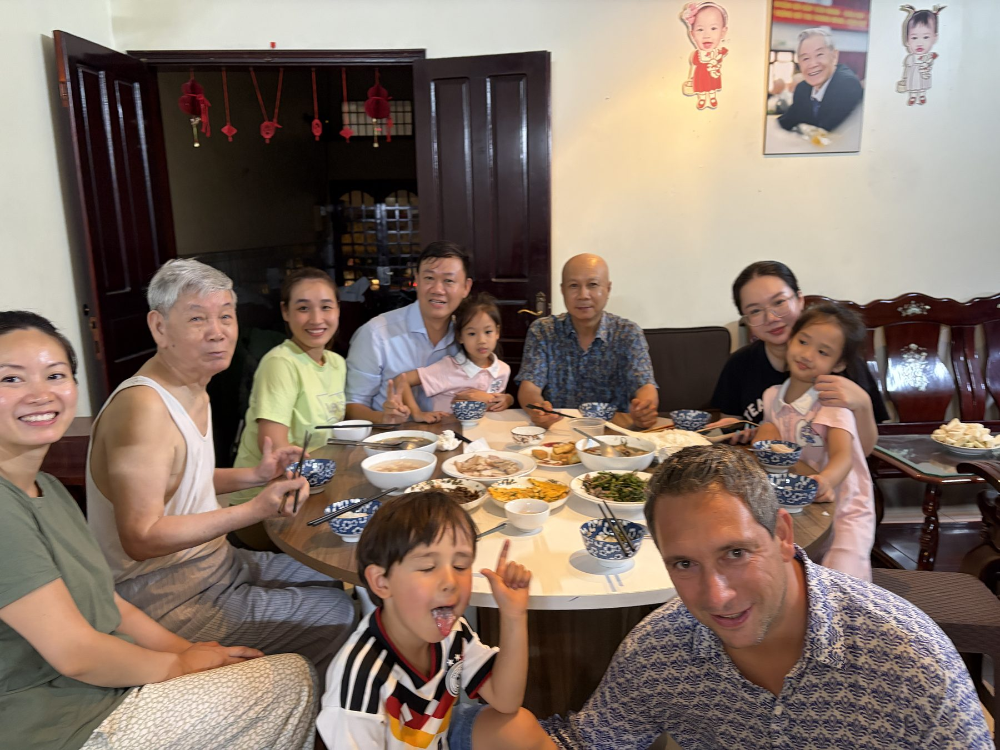
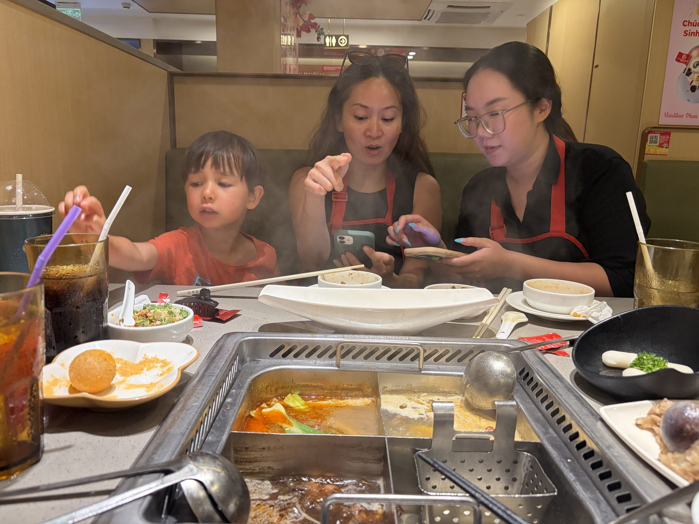
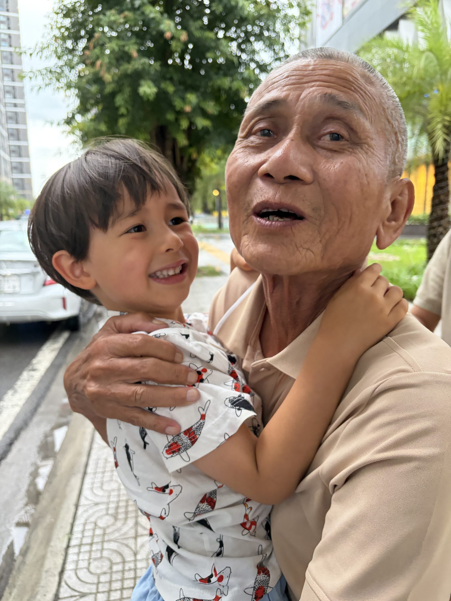
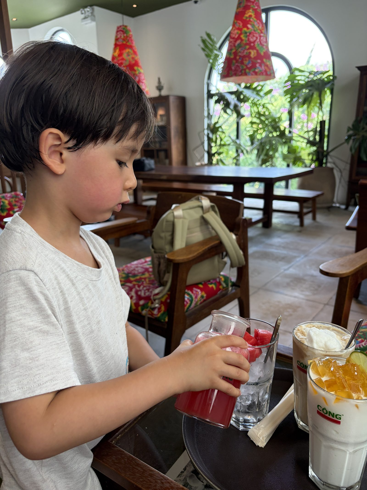

Anreise01
Frankfurt → Vietnam
Der Flug nach Vietnam
Der erste richtig große Flug: ein Umweg zum Flughafen, ein Burger vor dem Abheben und Wolken wie Watte.
Bericht lesen
Reisetagebuch · Vietnam 2026
Meine große Reise nach Vietnam — Tag für Tag erzählt
Hier erzähle ich von meiner großen Reise durch Vietnam — von der Familie, vom Essen, vom Roller-Chaos und von Wolken wie Watte. Jeden Tag ein neues Stück.

AnreiseDer erste richtig große Flug: ein Umweg zum Flughafen, ein Burger vor dem Abheben und Wolken wie Watte.
Bericht lesen
Familie & AnkunftPasskontrolle, kalte Limo, das große Familientreffen, der erste Uropa-Moment — und sooo viel Eis bei „I Love Kem".
Bericht lesen
Essen & SpielenHot Pot im Kinderrestaurant, ein neues Paw-Patrol-Auto aus der Mall und abends Fußball mit einer Pomelo.
Bericht lesen
Familie & AnkunftWiedersehen mit Opa und Onkel Dong, ein Game Center in der Mall, Restaurant mit Live-Band — und die erste Tuk-Tuk-Fahrt.
Bericht lesen
Café & PoolPhở zum Frühstück, ein Spielplatz, frischer Wassermelonensaft im Café, Schwimmen üben im Pool — und abends Dampfgaren mit Opa und Onkel Dong.
Bericht lesenDer nächste Tag wird gerade geschrieben.
Bald verfügbar